For CSS, setting isolation to isolate will turn the element into a stacking context.
By
default, elements use the auto keyword which implies that they are not isolated.
Compositing and Blending 2 §3.4.2
Each stage has a lime band 140 by 40; the first two hold a red square with
mix-blend-mode: multiply in a div: red times lime is black.
isolation: auto on the div: black.isolation: isolate: the red blends with the group's transparent start, and stays red.isolate, holding a blue one with z-index: -1: the blue
paints over the orange, in its stacking context.In CSS, a background image or the content of an img must always be rendered into an isolated group.
The
SVG image holds a red square with mix-blend-mode: multiply.

img at x 90: red both times, not blended with the
lime. Safari Black both times.